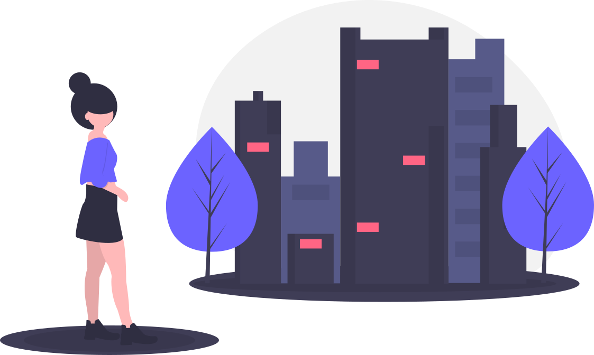

Долгие прогулки
Парки и усадьбы, где можно ходить часами и никуда не спешить.
СмотретьЛокадо — город, рассказанный простыми словами
Парки и усадьбы, где можно ходить часами и никуда не спешить.
СмотретьСтоловые, чебуречные и трапезные, где кормят как дома.
СмотретьМузеи и пространства, где показывают, как искусство выглядит сейчас.
СмотретьПомоги другим открыть его. Мы ценим любой вклад – от уютных лавочек до атмосферных галерей.

Пока ничего не нашли — попробуйте другое слово или сбросьте фильтр
Это все места на сегодня ✨
Новые локации добавляются каждую неделю — загляните ещё разМожно уточнить категорию